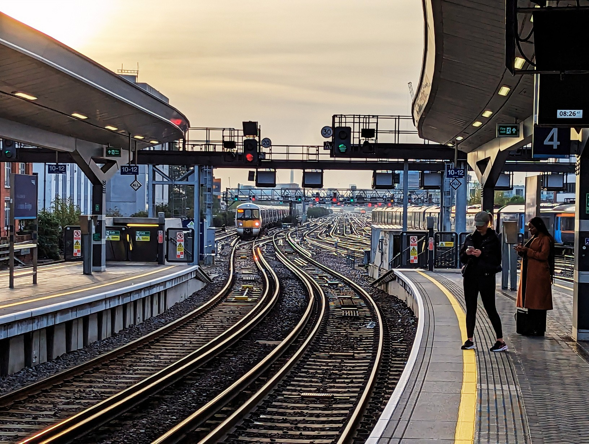

MOOWS / Issue 01 · August 2026
Tube meditation

Find a comfortable position, either sitting or standing. If you are
standing, try to have the feet at a good distance from one
another to maximise stability, or maybe you can lie your back on
the side of the carriage (not someone).
Rest your hands gently on your lap or by your sides if you don’t
have to hold onto something. Soften your gaze.
Take a deep breath in through your nose
Hold it
And slowly exhale through your mouth.
Notice the movement of the train beneath you.
The gentle rocking,
The small jolts,
The hum of the rails beneath your feet.
Lean into the noises around you.
The screech of the wheels as the train slows down
The rhythmic clatter as it speeds up.
Let each sound be an anchor to the present moment.
If a thought pulls you away, bring your focus back to the sounds
around you, accepting them as part of your experience.
Notice your body, maybe squeezed between strangers, maybe
sitting, or even leaning against the partition.
Feel the way your muscles subtly adjust with each turn and
stop.
Notice the pressure of your feet on the floor.
The weight of your hands resting in your lap or
holding onto the rail.
Listen to the announcements.
The calm, automated voice calling out the next station.
Let it be a cue to check in with yourself.
How does your body feel?
Are your shoulders tense?
Can you soften your jaw?
Turn your attention to the doors.
The gentle whoosh as they slide open
The rush of air as people steps in and out.
You can use these transitions as moments of pause.
Each door opening is an invitation to reset, each closing a
reminder to return to yourself.
With every new stop, take another slow breath in.
You can be curious about the shift in energy as passengers enter
and exit.
The flow of movement
The rustle of newspapers
The shuffle of feet.
You are a part of this moving city, yet within it, you can find
stillness.
As your station approaches, take another deep breath.
Collect your items, start moving a little, wiggle your toes in your
shoes, if they are not too tight.
Step out of the carriage with awareness, carrying this moment of
presence with you.